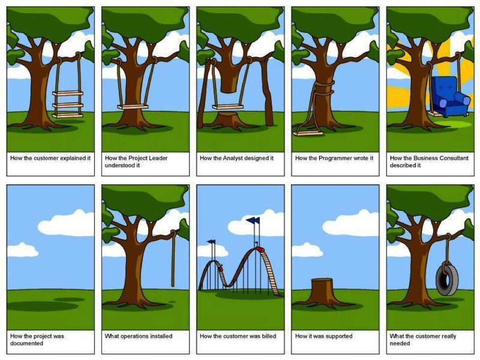

TPM stands for “technical program manager” a team that manages the coordination of business decisions and leads design through the implementation of the infrastructure.
Career Path
Technical Program Manager
Technical Program Manager II
Technical Program Manager III
Principal Technical Program Manager
Sr. Principal Technical Program Manager
Technical Program Manager (TPM) is Responsible for:
Enabling the team to launch various features
Leads the sprints, gathers requirements from the product managers
Sets up architectural reviews with teams consuming the service
Helps out in on-call and escalation
Types of Technical Program Managers
Front End
Backend
Integration
Business Intelligence
ERP
Localization
Hardware
Data Center
Process
Security
Cloud TPM
UI/UX
Perhaps the biggest advantage to being a technical project manager is having the ability to fill the communication gap between the development team and the business team.
This can manifest itself in many ways:
Describing how individual development components relate to the big picture for an organization
Ensuring the business team understands why certain technical decisions were made along with the benefits and trade-offs
Explaining to the business why a requirement may not be technologically feasible but here are some alternatives
tpm
What Now?
So now you’re convinced that you should become a technical project manager – but how?
Take Time to Understand Your Project/Product.
Learn to Code on Your Own.
Build Something on your Own.
Challenges
Lack of loyalty in employees and corporate bosses.
Evolution of Technology.
Globalism in HR.
Self Image and Proper Restraint.
Common Mistakes / Misconceptions
Tech Project Manager is only skilled in project management
Tech Project Manager Job is to create reports/ Gantt charts
No role for Tech Project Manager in Agile context
Tech Project Manager role is the same across the organisation
Independent Practice
Try to manage or lead a project in your current organization or your team.
Check for Understanding
Are you able to manage or lead the project?
Can you deliver project on time?
Can you Plan for problems and potential conflicts?